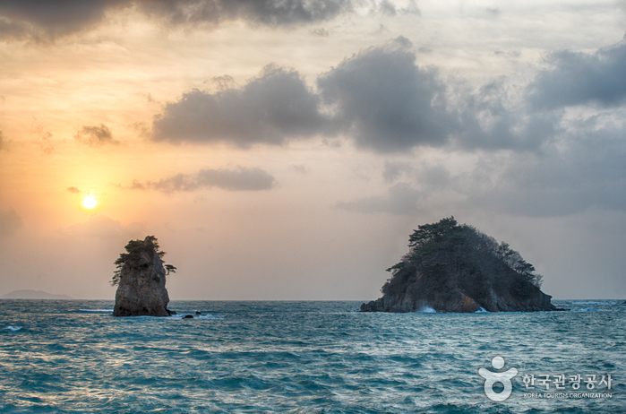

꽃지해수욕장
충남 태안군 안면읍 광지길에 자리한 꽃지해변은 5km에 이르는 백사장과 할배바위, 할매바위가 어우러져 그림 같은 풍광을 보여준다.
충남 태안군 안면읍 광지길에 자리한 꽃지해변은 5km에 이르는 백사장과 할배바위, 할매바위가 어우러져 그림 같은 풍광을 보여준다.
태안읍에서 남쪽으로 36km 정도 떨어진 해수욕장으로 모래밭 길이 700m, 폭 250m, 면적 14ha, 경사도 3도, 평균수심 1.2m, 수온 섭씨 22도로 모래질이 좋고 야영하기에 좋다.
태안군 남면과 안면읍을 연결하는 연육교 남쪽 3km 거리에 있으며 백사장의 길이는 3.8km, 폭 300m, 경사도 6도, 평균수심 1.5m, 수온은 섭씨 22도이다.
기지포해변은 태안반도에 있는 크고 작은 다른 해수욕장과 같이 여름 한낮의 폭염을 피할 수 있는 울창한 송림과 경사가 완만한 깨끗한 백사장이 일품이며, 가족단위 여행객들의 하계휴양지로 좋은 지역이다.
영목항은 행정구역상으로 태안군 구남면 고남리에 위치한 항구로 안면도의 남쪽 끝 고남면 소재지에서 약 4km쯤 내려가면 조그마한 언덕아래 멀리 남쪽바다를 향하여 위치해 있다.
서산 간월도와 안면도로 가는 들머리인 홍성나들목을 나가면 왼쪽으로 김좌진 생가와 한용운 생가를 가리키는 이정표가 나란히 서있다.
우리나라 마애불상의 초기 예로 부채꼴 바위 면에 사각형 감실을 마련하여 중앙에 보살상을 두고 좌우에 불상을 배치해 놓음으로써, 1구의 불상과 2구의 보살상으로 이루어지는 일반적인 삼존불상과 달리 2구의 불입상과 1구의 보살입상이 한 조를 이루는 특이한 삼존불상 형식을 보여주고 있다.
기미독립선언 민족대표 33인의 한분이신 옥파 이종일선생(沃派 李鍾一先生)이 태어난 생가다.